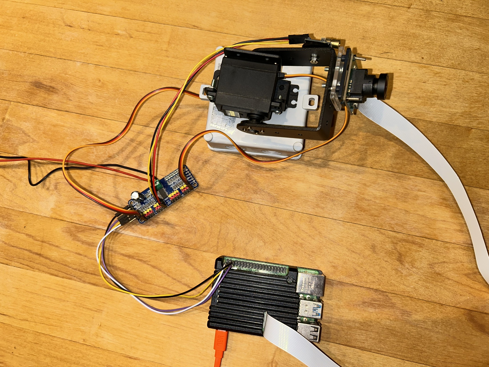
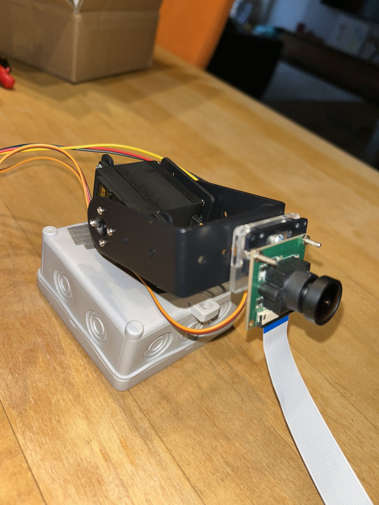
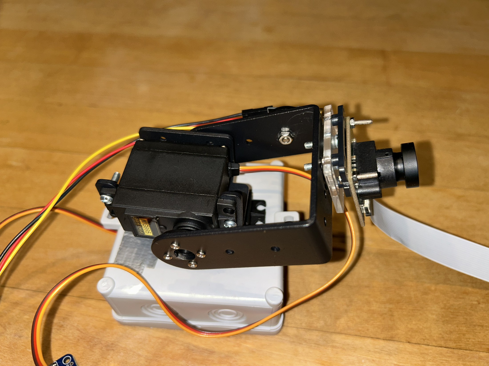
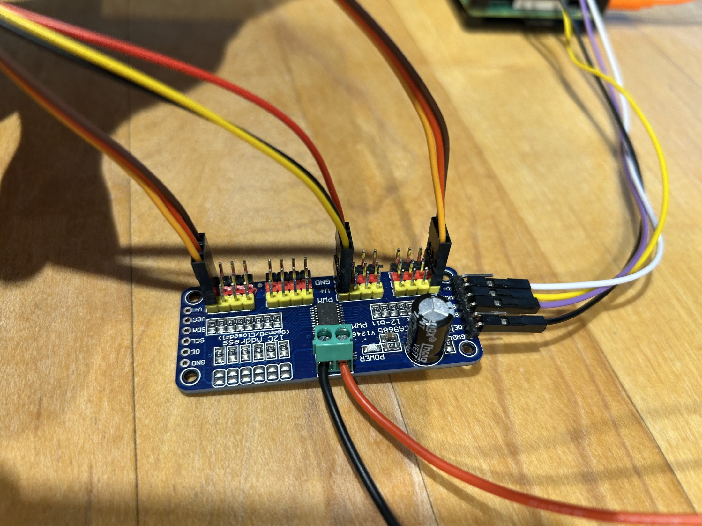
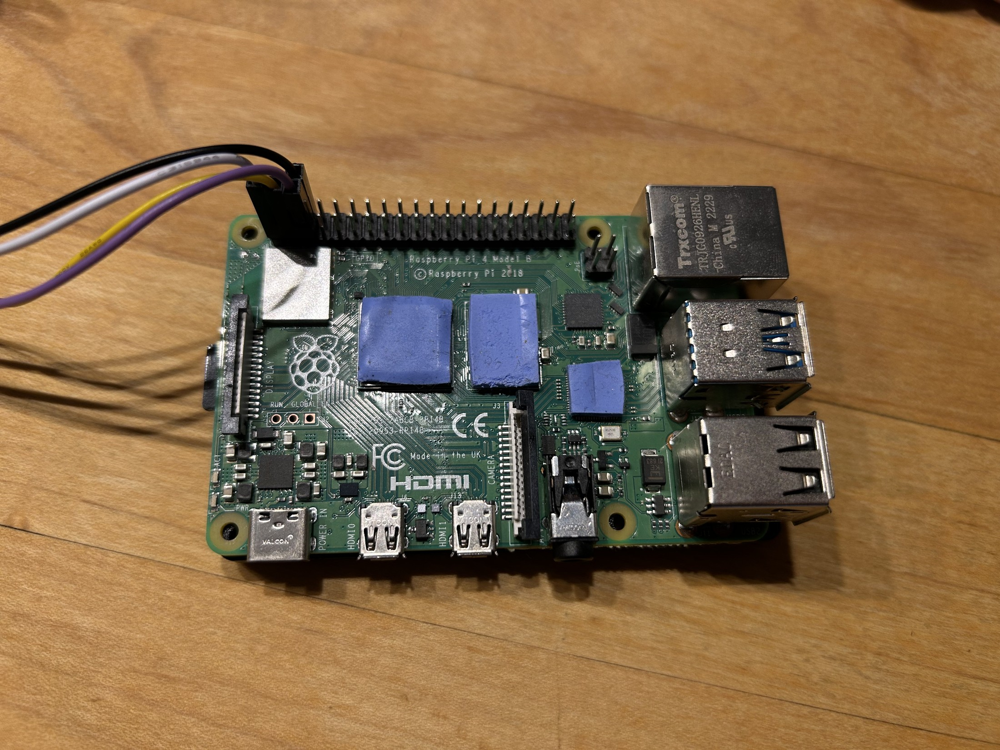
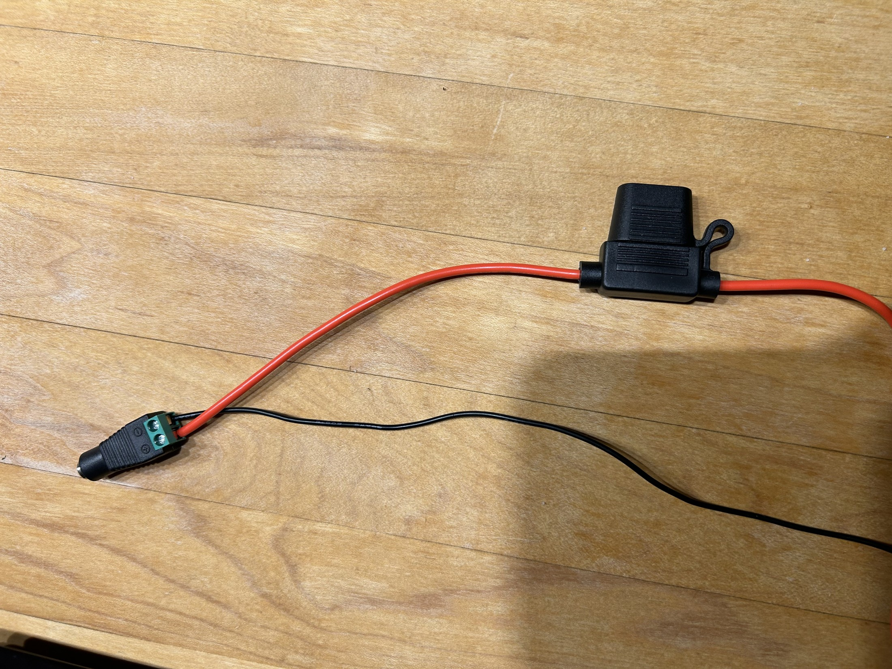
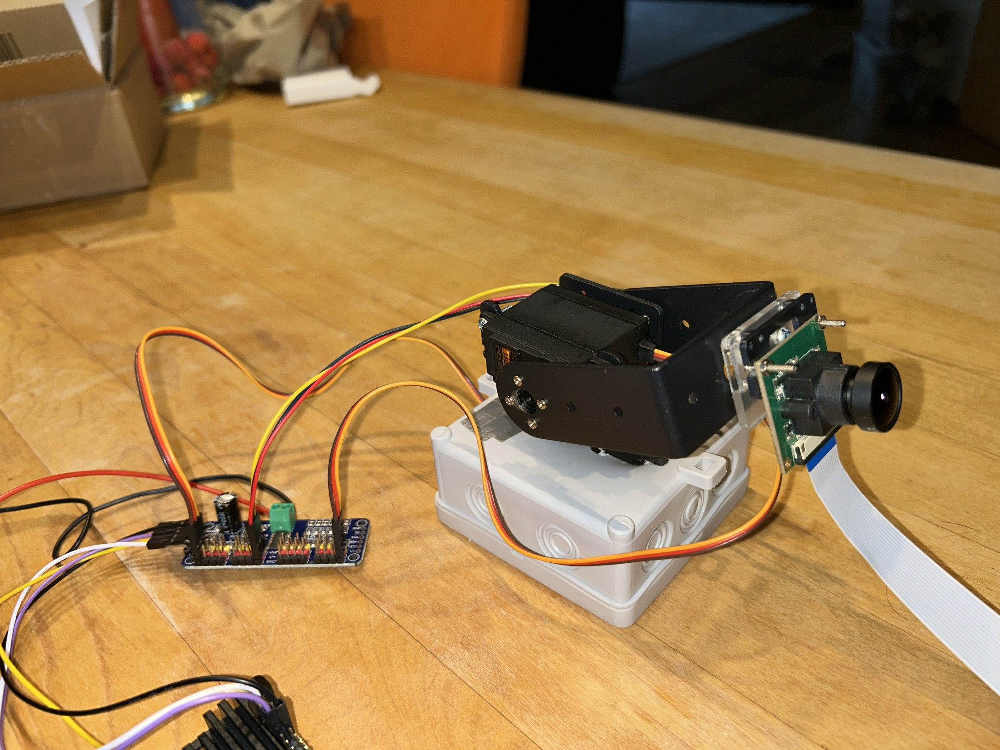

01 / OVERVIEWThe idea
We wanted to build a small camera mount that could follow a person without someone turning it by hand. The camera finds a face in the image, and two motors adjust its horizontal and vertical direction.
The Raspberry Pi processes the camera image and controls the mount. A laptop displays the live view and controls in a browser. We first tested the camera and motors separately, then brought them together on the workbench.


- Computer
- Raspberry Pi 4B
- Movement
- Pan and tilt
- Face detection
- YuNet / OpenCV
- Control interface
- Web browser
02 / DEMONSTRATIONSThe prototype in use
The moving camera mount
The live view in the browser
Recorded indoors on 7 November 2026. These are bench demonstrations. We have not yet measured tracking accuracy or the full delay between a person's movement and the camera's response. The two recordings play independently.
03 / WORKING PRINCIPLEClosing the loop
- 01Read the camera image
- 02Find the face position
- 03Correct the motor angles
- 04Check the next image
The controller compares the face position with the centre of the picture. A larger offset produces a faster correction, up to the selected speed limit. As the face moves towards the centre, the correction becomes smaller.
YuNet is the default face detector. We can also select OpenCV's Haar detector for comparison. The browser provides tracking on/off, manual movement, and speed settings. Tracking starts switched off.
04 / HARDWAREWhat we used
| Component | Quantity | Purpose |
|---|---|---|
| Raspberry Pi 4B | 1 | Camera processing, motor commands, and the browser interface |
| CSI camera with OV5647 sensor | 1 | Capturing the scene; 5 MP sensor maximum resolution |
| MG995 servo motors | 2 | Horizontal rotation and vertical tilt |
| Metal pan/tilt bracket | 1 | Supporting the camera and both motors |
| PCA9685 controller | 1 | Sending control signals to the motors |
| External 5 V, 5 A supply | 1 | Powering the motors separately from the Pi |
| Pi supply and microSD card | 1 each | Powering and running the Raspberry Pi |
| Wires, adapters, and inline fuse holder | Assorted | Power and control connections |
| Small enclosure/base | 1 | Holding the mount on the workbench |
The wider parts inventory includes a distance sensor and laser modules. Neither is used in the face-tracking demonstration. The laser stays disconnected during tests with people.
05 / PHOTOGRAPHSA closer look at the build












06 / BUILD NOTESWhat needed adjustment
The first tracking test moved both axes in the wrong direction. The software's correction directions had to match the physical mounting of the servos. Reversing both axes corrected that behaviour.
We then adjusted movement speed and the small target area around the image centre. Slow corrections could not keep up with movement; stronger corrections could overshoot. The browser controls let us test those settings without changing the wiring.
The motors have their own power supply. We check voltage, polarity, and connections before a test, and keep the camera cable clear of the bracket.
07 / CURRENT STATEWorking prototype
The colour stream, face detection, and both servo axes have worked together in indoor demonstrations. Earlier camera checks ran at about 20 frames per second with a 640 by 480 output image.
The mounting and wiring are still at a prototype stage. Useful next checks would include:
- Settling time after a person changes direction.
- Tracking at different distances and light levels.
- The effect of cable routing and movement in the bracket.
- Repeatability across several test runs.
Built with OpenCV, the YuNet face detector, and Picamera2. Photographs and recordings by the project team.